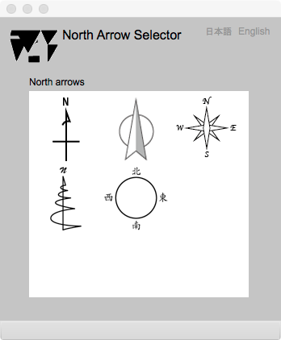

North Arrow Selector
Introduction
This page is provided for the selection on a north arrow symbol putting on the map. A north arrow should be selected for content and aim of the map.
North arrow selector

Figure 1. Page for the selection of a north arrow symbol
FIELDS
North arrows (selectable)
The north arrow symbol can be selected by clicking the symbol in this area. The selected symbol is displayed on the map.
BUTTONS
日本語
今あなたが読んでいるドキュメントが表示されます．
English
You can read the tutorial written in English.